Yusuhara, Kochi: things to do, food and stays
Yusuhara · Kochi
Yusuhara
Highlighted on the Kochi map.
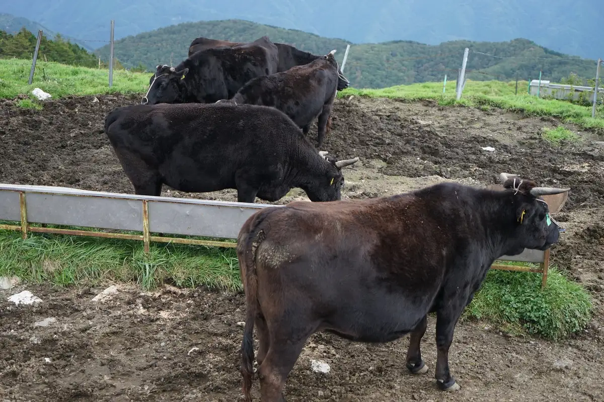
Stay
雲の上のホテル別館・マルシェユスハラ
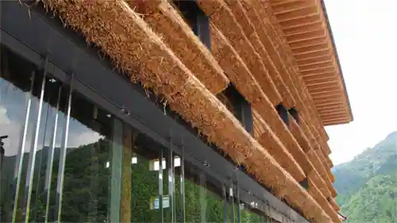
Kumo No Ueno Hotel Bekkan Marushieyusuhara
Hotel in Yusuhara with parking.
ライダーズイン雲の上
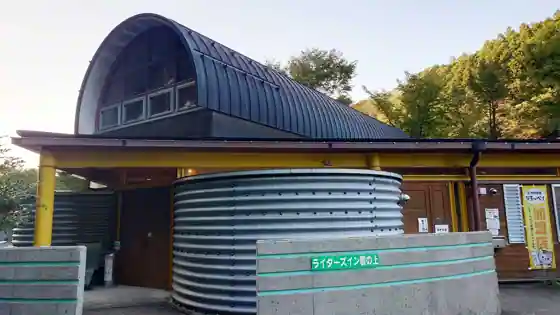
Raidazuin Kumo No Ue
ゲストハウス かみこや
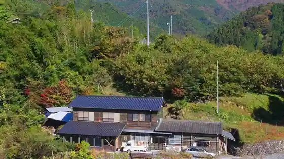
Guesthouse Kamikoya
越知面 遊友館
Ochi Men Yu Tomo Kan
Inn in Yusuhara with parking.
Dining
コーヒースタンド カンズヒュッテ
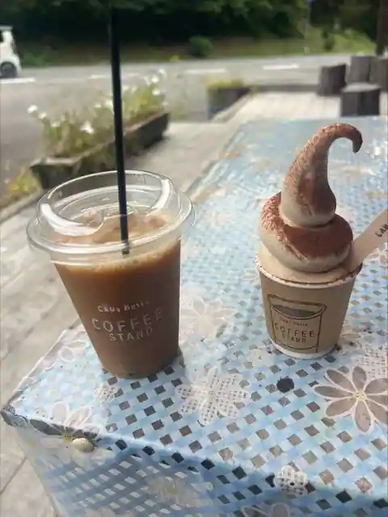
Coffee Sutando Kanzuhyutte
道の駅 ゆすはら
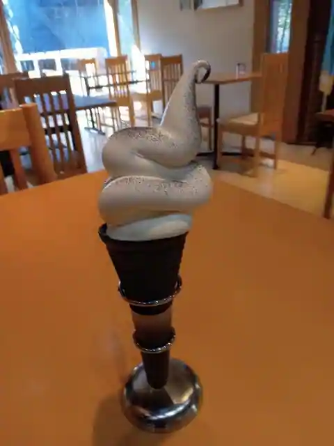
Michi No Eki Yusuhara
シェムワ
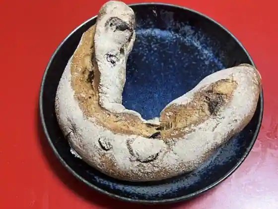
Shiemuwa
かざぐるま
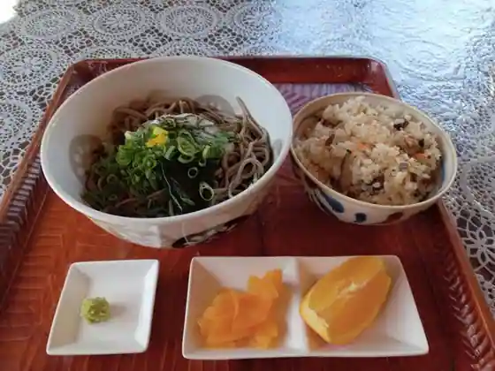
Kazaguruma
雲の上のレストラン
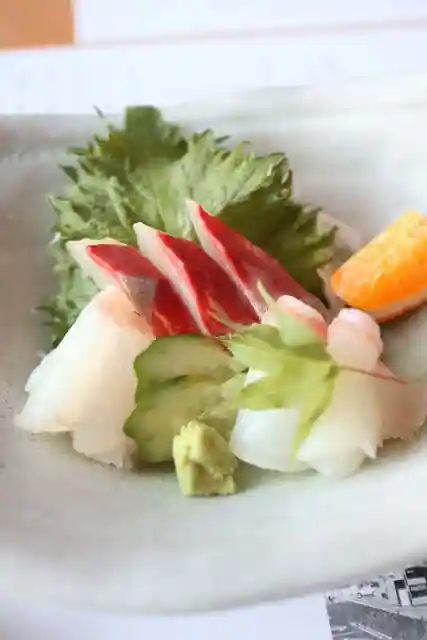
Kumo No Ueno Restaurant
くさぶき
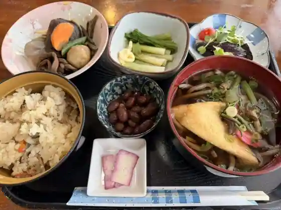
Kusabuki
スパイス&カレー BONGA
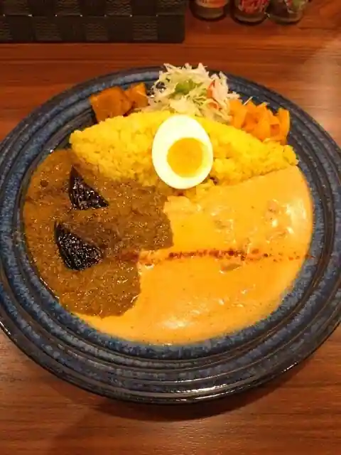
Supaisu & Kare BONGA
インディーズ
Indizu
雲の上のカフェ
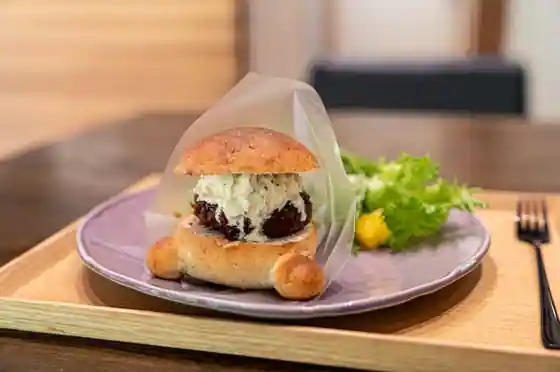
Kumo No Ueno Cafe
チムジルバンレストラン鷹取
Chimujiruban Restaurant Takatori
桜畑のテラスカフェ
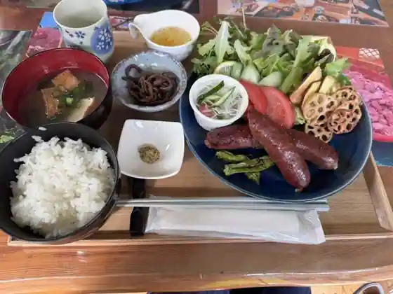
Sakura Hatake No Terrace Cafe
Sights
Tengu Highlands
Yusuhara Town Hall
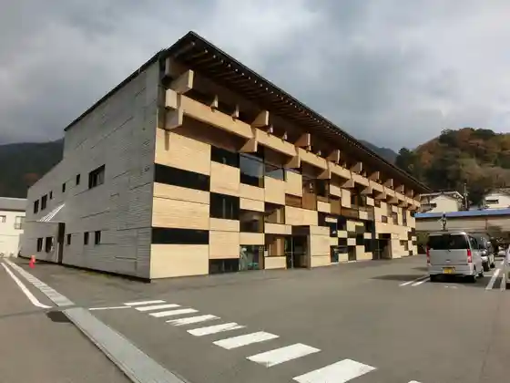
Machi no Eki (Yusuhara)
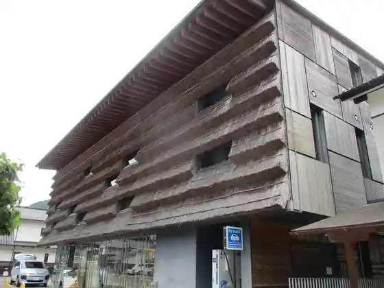
Niragatoge
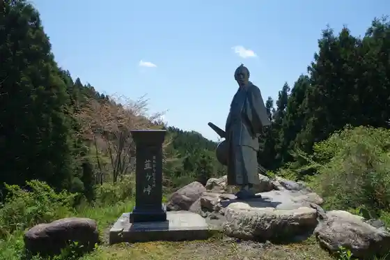
Ichiyagamori
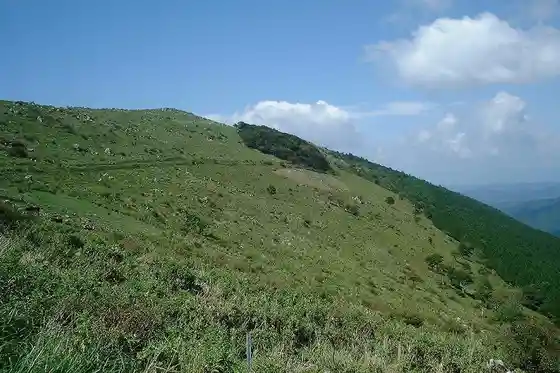
Kamiari Kyo no Senmaida
Onogahara